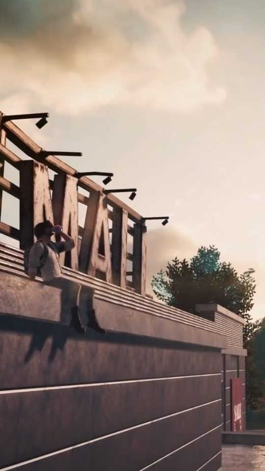

BGMI Wallpapers: The Best Weapon and Character Art

BGMI gives players an enormous amount of visual material to work with: weapon skins, character outfits and detailed maps. This guide looks at what actually holds up on a modern high-resolution phone screen, and it compares the two sources most people use, in-game screenshots and official key art, so you can decide which to reach for. The short version is that they are good at different things, and the best wallpapers often come from knowing which one you are looking at.
What makes a BGMI wallpaper hold up on a phone screen
A wallpaper is viewed in three situations: briefly at a glance, at full brightness in daylight, and dimly at night behind notifications. An image that looks dramatic on a monitor can fall apart in any of those. The wallpaper that survives is usually the one with a clear subject, controlled contrast and enough empty space for the clock and icons to sit on.
Resolution is the first practical hurdle. Phone screens are dense, so a small crop of a screenshot gets stretched and looks soft. If your source image is only a portion of a 1080p frame, enlarging it to a tall phone screen will show the pixels. Starting from a large, clean source and cropping down is the reliable path.

Weapon skins: the M416 Glacier and its neighbours
Weapon skins are the most reliable BGMI wallpaper material because a gun is a graphic object. It has a strong outline, and a close crop reads clearly even when it is small.
- M416 Glacier is the most recognisable BGMI skin. Its pale blue-white finish and clean lines make a crisp wallpaper that does not need a background to work.
- AKM skins suit darker, more aggressive compositions, and the wooden and metal tones read well against muted backgrounds.
- Kar98k and AWM skins are ideal for tall, vertical wallpapers because the rifles are long and thin, matching a phone's shape.
- Groza, UMP45, AUG, M762 and DP28 each have distinct profiles, so you can pick a weapon whose shape you actually like rather than the one with the flashiest finish.
The trick with a weapon wallpaper is framing. A gun shown at an angle with a bit of space around it looks intentional; a gun jammed against the edges of the frame looks accidental. Leave breathing room and let the background stay quiet.

Character outfits and the Mythic look
Character outfits in BGMI range from plain to heavily stylised, and the premium ones are where the art direction gets loudest. Outfits with capes, glowing trim or animated effects can look great, but they need careful framing. A character with a lot going on in the outfit works best against a simple background.
When choosing a character wallpaper, look at the face and the upper body first, because that is the part your eyes land on. A confident pose with a clear head silhouette survives the crop far better than an action shot where the character is turned away or partly hidden. If the outfit has one strong accent colour, that colour becomes the wallpaper's identity, so pick something you will not tire of seeing every time you unlock your phone.
Map art and scenic backgrounds
BGMI maps are their own kind of wallpaper. Erangel's green fields and industrial towns, Miramar's desert, Sanhok's jungle, Vikendi's snow, Livik's compact mix and Nusa's island coast each carry a strong mood and a recognisable palette. A well-composed landscape shot can make a better wallpaper than a character, because it is naturally calm and gives your icons somewhere to sit.
Scenic shots work best when they have depth: a foreground, a middle distance and a horizon. The classic mistakes are a flat wall of trees, a horizon that cuts through the middle of the screen where the clock sits, and a sky that is blown out to plain white. Early morning and late evening light, when the sun is low, gives the most attractive colour and the longest shadows.

In-game screenshots versus official key art
Most BGMI wallpapers come from one of two places, and they behave very differently. The table below sets out how each source tends to perform.
| Quality | In-game screenshot | Official key art |
|---|---|---|
| Resolution | Limited by your device and capture settings | Usually large and clean |
| Background clutter | High, includes HUD and other players | Low, composed for display |
| Colour and lighting | Varies with time of day and weather | Consistent and colour graded |
| Portrait suitability | Needs cropping from landscape | Often framed with space for text |
| Originality | Unique to your account and match | Widely seen and reused |
The takeaway is simple. Official key art wins on technical quality: it is sharp, well lit and usually leaves space for a clock. In-game screenshots win on originality: the shot is yours, and nobody else has that exact frame. If you want a wallpaper that looks polished, key art is the safer base. If you want something personal, a careful screenshot can beat it, provided you crop well and avoid the HUD.

Getting a clean capture
The difference between a forgettable capture and a good one is usually patience rather than equipment. A few habits make the process reliable.
- Set graphics and frame rate as high as your device allows before capturing.
- Hide the on-screen controls if the mode lets you, or capture in a mode with less interface.
- Pick your moment: low sun, clear weather and a clean backdrop.
- Capture in landscape, then crop to portrait around your subject.
- Avoid including other players' names and markers in the frame.
One habit separates good captures from forgettable ones: slow down. Stand still, let the camera settle, and look at the edges of the frame before you press the button. A slightly duller scene with a clean composition beats a dramatic one full of clutter every time.
Frequently asked questions
Are BGMI weapon skins good for wallpapers?
Yes. Weapons are strong graphic subjects because they have clear outlines and recognisable shapes. A close crop of an M416 Glacier, Kar98k or AWM works especially well because the long, narrow form suits a tall phone screen.
Should I use screenshots or official art for my wallpaper?
Official key art is sharper and better lit, so it needs less work. Your own screenshots are unique and personal but need careful cropping to remove the HUD. Many players use key art for the lock screen and a personal screenshot for the home screen.
Which BGMI map makes the best scenic wallpaper?
It depends on the mood you want. Erangel and Vikendi give calm, clean landscapes, Miramar gives warm desert tones and Sanhok gives dense green detail. A landscape with depth, captured in low light, tends to look best.
How do I stop my BGMI wallpaper from looking blurry?
Start from the largest, cleanest source you can and crop down rather than enlarging a small image. Capturing at your device's highest resolution and avoiding heavy zoom helps. Blur usually comes from stretching a small screenshot to fill a dense screen.